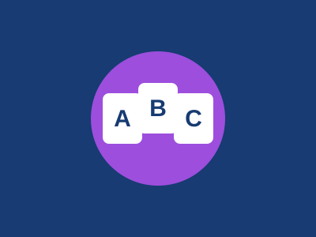

Skip to photo gallery
English Club Learning Materials
Explore the English learning materials below and click one to display it here.
🌙
Selected materials
Click an image below to display it here.
Materials collection
Reading
Writing
Listening
Gallery

Grammar
Vocabulary